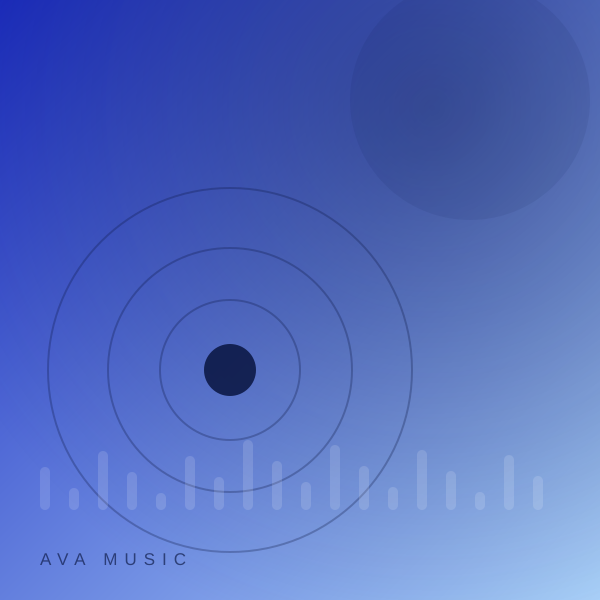

دانلود آهنگ جدید آرمان راد به نام شب بارونی
آهنگ جدید آرمان راد با نام «شب بارونی»؛ هماکنون با کیفیت اصلی به همراه متن ترانه آماده دریافت است.
خواننده: آرمان رادادامه مطلب و دانلود ←

انتخاب سردبیراز تازهترین تکآهنگها تا آلبومها و ریمیکسهای محبوب؛ همهچیز در یک آرشیو مرتب و همیشه بهروز.
رفتن به جدیدترینها ← ▶
▶
آهنگ جدید آرمان راد با نام «شب بارونی»؛ هماکنون با کیفیت اصلی به همراه متن ترانه آماده دریافت است.
 ▶
▶
قطعهای احساسی و شنیدنی از رها که با تنظیمی آرام منتشر شده است. نسخههای ۱۲۸ و ۳۲۰ در ادامه مطلب.
 ▶
▶
ریمیکس پرانرژی و مناسب مهمانی با کیفیت بالا؛ برای شنیدن آنلاین و دریافت فایل وارد ادامه مطلب شوید.
اثر تازه دنیز با حالوهوای موسیقی ترکی؛ همراه با اطلاعات انتشار و لینکهای دریافت در دو کیفیت.
 آلبوم لحظههامجموعه منتخب پاپ
آلبوم لحظههامجموعه منتخب پاپ